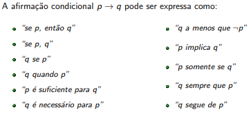

Lógica Proposicional
Indíces
- Proposições compostas
- Proposição: Negação
- Proposição: Conjunção
- Proposição: Disjunção
- Proposição: Condicionais
- Proposição: Bicondicionais
- Referências
Preposições Compostas
- Preposições compostas podem ser criadas ao se combinarem proposições já existentes.
A combinação de preposições é feita usando operadores lógicos ou conectivos lógicos como:
- negação (não).
- conjunção (e).
- disjunção (ou).
- implicação (implica).
- implicação dupla(implica duplamente).
- Nós vamos agora estudar estes conectivos.
Preposições: Negação
(Voltar)
- Seja p uma preposição.
A negação de p, denotada por ¬p, é a afirmação:
Não é o caso de que p.
Lê-se a preposição ¬p como, "não p".
O valor de verdade de ¬p é o oposto do valor de verdade de p.
Tabela da verdade para a negação de uma preposição p:
- Exemplo: Seja a preposição
p: "O computador do Mário roda Linux."
A negação ¬p é: "Não é o caso de que o computador do Mário rode Linux.""
Forma alternativa de negação ¬p: "O computador do Mário não roda Linux."
- Exemplo: Seja a proposição
q: "Luciana tem pelo menos 25 anos."
A negação ¬q é: "“Não é o caso de que Luciana tenha pelo menos 25 anos.”
Forma alternativa de negação ¬q: “Luciana não tem pelo menos 25 anos.”
Mais forma de negação ¬q: "Luciana tem menos de 25 anos."
Conectivos lógicos: Conjunção
(Voltar)
- Sejam p e q preposições
A conjunção de p e q, denotado por p ∧ q, é a afirmação:
"p e q"
A conjunção p ∧ q é verdadeira quando ambos p e q são verdadeiros, e ´e
falsa em caso contrário.
- Tabela da verdade para a conjunção de duas preposições p e q:
| p |
q |
p ∧ q |
| T |
T |
T |
| T |
F |
F |
| F |
T |
F |
| F |
F |
F |
- Exemplo:Sejam p e q preposições.
p: "Hoje é sábado."
q: "Vou comer bolo."
A conjunção p ∧ q é:
“Hoje é sábado e vou comer bolo.”
- Exemplo: A preposição
"Hoje chove, mas vou sair"
é a conjunção p ∧ q das preposições
p : "Hoje chove"
q: "Hoje vou sair"
Conectivos lógicos: Disjunção
(Voltar)
- Sejam p e q preposições.
A disjunção de p e q, denotada por p V q, é a afirmação
"p ou q".
A disjunção p V q é verdadeira quando ao menos um entre p e q é verdadeiro, e é falsa em caso contrário.
- Tabela da verdade para a disjunção de duas preposições p e q:
| p |
q |
p V q |
| T |
T |
T |
| T |
F |
T |
| F |
T |
T |
| F |
F |
F |
Exemplo: Sejam as preposições:
A disjunção p V q é:
“O celular de Alice é azul ou o celular de Alice é novo.”
Alternativamente, p V q é:
“O celular de Alice é azul ou é novo.”
Conectivos lógicos: Condicionais
(Voltar)
- Sejam p e q preposições.
A afirmação condicional ou implicação p → q é a afirmação
"se p, então q".
A afirmação condicional p → q é falsa quando p é verdadeira e q é falsa, e a afirmação é verdadeira caso contrário.
- Na afirmação condicional p → q:
- p é chamado de hipótese, antecedente ou premissa.
- q é chamado de conclusão ou consequente.
Ou seja, para que p aconteça, o q tem que ser verdadeiro, sendo o q independente.
- Tabela da verdade para a preposição condicional envolvendo duas preposições p e q:
| p |
q |
p → q |
| T |
T |
T |
| T |
F |
F |
| F |
T |
T |
| F |
F |
T |
A afirmação condicional p → q é falsa quando p é verdaeira e q é falsa, e a afirmação é verdadeira caso contrário.
Exemplo: Considere a implicação abaixo.
"Se eu for eleito, eu vou abaixar os impostos"
A proposição condicional é falsa se eu for eleito e não abaixar os impostos.
Se eu não for eleito, eu posso abaixar os impostos ou não, sem assim quebrar
minha promessa. Logo, se eu não for eleito, a proposição condicional é
verdadeira independentemente de se eu abaixar os impostos ou não.
- Na lógica proposicional, o valor de verdade da implicação p → q só depende do valor de verdade de p e q, e não de seu significado.
A implicação só é falsa se "q for menos verdadeiro que p", ou seja, se p for verdadeiro e q for falso.

Conectivos lógicos: Bicondicionais
(Voltar)
- Sejam p e q proposições.
A afirmação bicondicional ou implicação dupla p ↔ q é a afirmação
"p se, e somente se, q".
A afirmação bicondicional p ↔ q é verdadeira quando p e q têm o mesmo valor de verdade, e é falsa em caso contrário.
- Em linguagem natural é comum expressar p ↔ q como:
- “p é necessário e suficiente para q.”
- "p sse q". Note que usamos "sse" com dois "s".
- Tabela da verdade para o ou exclusivo de duas proposições p e q:
| p |
q |
p ↔ q |
| T |
T |
T |
| T |
F |
F |
| F |
T |
F |
| F |
F |
T |
- A proposição bicondicional p ↔ q é verdadeira sempre que ambos p → q e q → p são verdadeiros, e ela é falsa em caso contrário.
- Hott, B. (s.d.). Lógica Proposicional (pp. 1-29).
Primeiro site HTML, aprendido na plataforma Dio.me
"Só sei que nada sei"
Voltar a página anterior